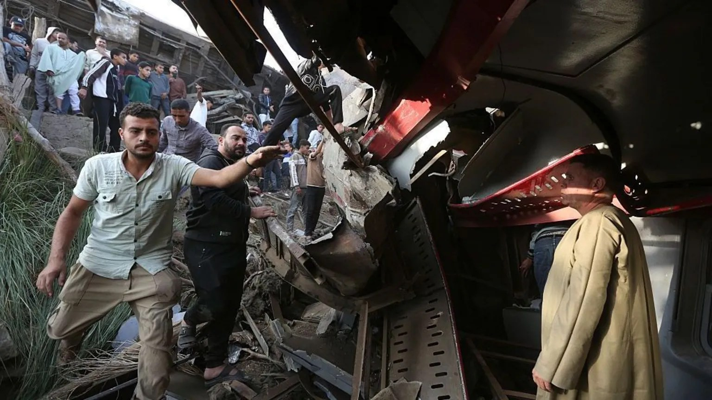

Seven die as two trains collide in Egypt

At least seven people were killed and more than 100 injured when two trains collided near Giza, derailing several carriages down an embankment. The crash occurred between Kafr Ammar and Al-Raqqa stations in Al-Ayyat. Emergency workers, passengers and bystanders searched the overturned and badly damaged carriages for survivors and injured people.
Egypt’s railway authority said a train travelling from Giza to Fayoum struck the rear of a stationary service travelling from Cairo to Aswan. Health Minister Dr Khaled Abdel Ghaffar said some injured people were being treated for broken bones and head injuries. The driver of one train was among those killed, and the public prosecutor’s office warned that the death toll could rise.
Hospitals in the affected area were placed on heightened alert. The Egyptian Red Crescent said it was providing medical care and psychological support to victims and their families at the scene. Train services between Giza and the Upper Egypt region were suspended while cranes were brought in to remove the wreckage.
President Abdel Fattah al-Sisi ordered an investigation into the circumstances of the crash and said anyone found responsible for negligence should be held accountable. The collision has prompted calls for the transport minister to resign, while Saudi Arabia and Turkey expressed condolences. The accident occurred in an area with a history of deadly railway crashes. In February 2002, a fire aboard a Cairo-to-Luxor passenger train killed more than 370 people in Egypt’s deadliest train disaster.
Source: Punch